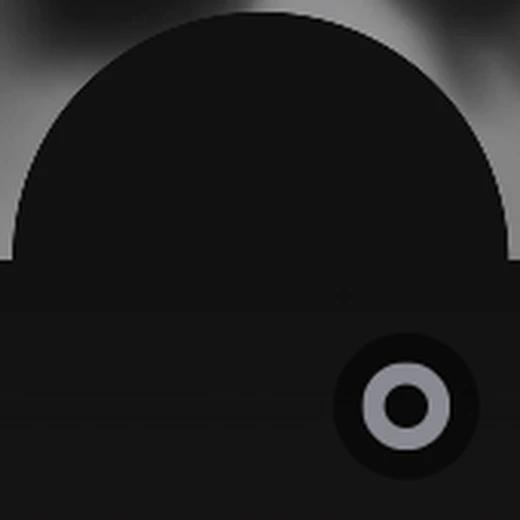
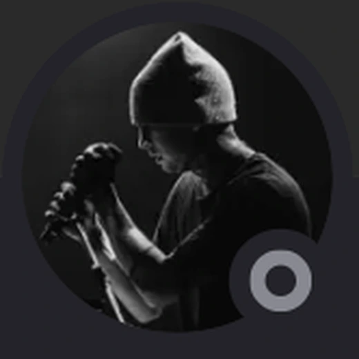
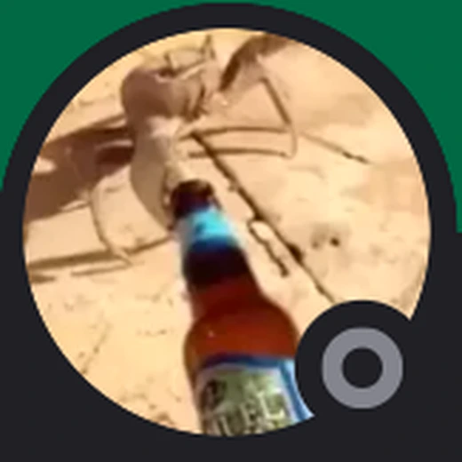
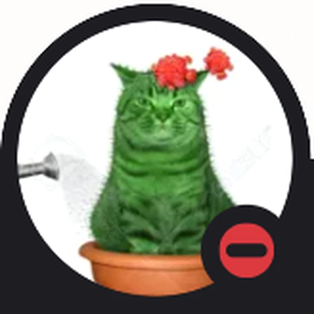
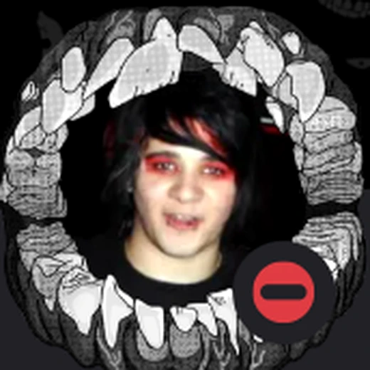
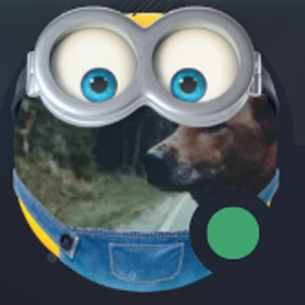
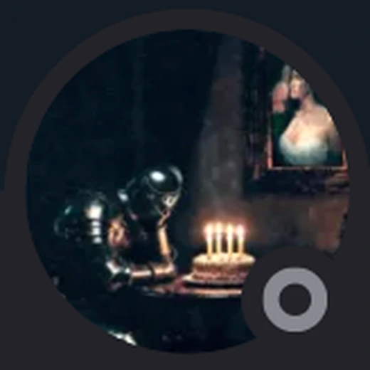
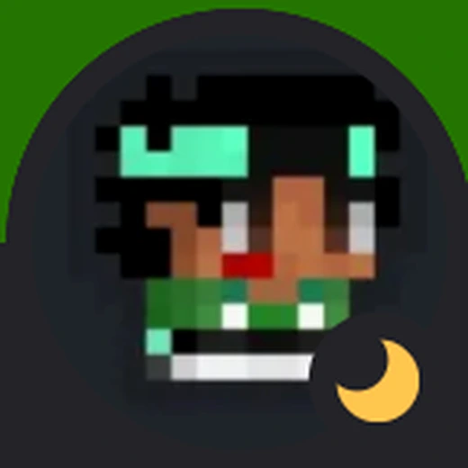

CALENDARIOJornadas y horarios
LIGA X11 · COMUNIDAD DE HAXBALL
NEWCASTLE LEAGUE
Consulta las jornadas, arma alineaciones, revisa los planteles y encuentra las reglas y enlaces del servidor.
ALINEACIONESFormaciones editables
PLANTELESFichados por liga
REGLAMENTO17 capítulos
LA LIGA
Información general
Newcastle League reúne la actividad del servidor: jornadas, planteles, reglas, staff, partners y transmisiones.
Competencia
Reglamento, formatos y torneos organizados dentro del servidor.
Organización
Owners, staff y administradores encargados de la comunidad.
Comunidad
Ligas afiliadas, partners, TikTok y transmisiones en Twitch.
CALENDARIO
Fechas y jornadas
Las fechas se muestran tal como las cargue el staff. Cuando una jornada todavía no esté confirmada aparecerá sin día asignado.
DIRECCIÓN TÉCNICA
DT responsables de planteles y fechas
Dysta y Valdo pueden organizar los fichados, guardar alineaciones y cargar jornadas desde el modo de edición.

DT
Dysta
Presidenta del club

DT
Valdo
Dirección técnica
No hay fechas cargadas
El DT puede añadir jornadas desde el modo de edición.
ALINEACIONES
Armador de equipos
Cualquier persona puede armar una alineación. Selecciona la competencia, elige una formación y coloca a los jugadores en la cancha.
CANCHA
Newcastle League · 4-3-3
Haz clic en un jugador y después en una posición
EQUIPO
Staff de Newcastle League
Owners, staff y administradores del servidor.
01
OWNERS
3 MIEMBROS
OWNER
CINXTURY
OWNER
LEO | ProDiamanteXD

OWNER
Fherr.
02
STAFF
4 MIEMBROS
STAFF
All berlin

STAFF
Jalva
STAFF
ElUriel

STAFF
ATM | Ricardo Kaká
03
ADMINISTRADORES
4 MIEMBROS
ADMINISTRADOR
ANGRY

ADMINISTRADOR
LEO | Pene no money

ADMINISTRADOR
LAB | shetkp

ADMINISTRADOR
FLA | Bogueto73
REGLAMENTO X11
Reglas de la Season 6
El reglamento está organizado por tema. Puedes abrir cada capítulo o descargar el PDF original.
01 Liga 10 puntos
- Formato de Liga
- 1.1
El máximo de jugadores permitido por equipo será de 30 jugadores.
- 1.2
La competición será a partido único en fase regular.
- 1.3
Al concluir las jornadas regulares el equipo que termine en primer lugar, será el campeón de liga.
- 1.4
En caso de que dos equipos estén empatados en puntos:
- 1.4.1
El posicionamiento de la tabla se tomará en cuenta a partir de la diferencia de goles.
- 1.4.2
En caso de que estén empatados por diferencia de goles, se tomará en cuenta a partir de sus enfrentamientos directos durante las jornadas regulares.
- 1.4.3
En caso de que los enfrentamientos en jornada también estén empatados, se jugará un partido de desempate. Si en los tiempos regulares queda empatado, se llevarán a cabo los penales hasta tener un ganador.
- 1.5
Los partidos tendrán una duración de 20 minutos. 10 minutos por tiempo.
- 1.6
El link de la sala se mandará 10 minutos antes de la hora acordada del partido, y se esperarán a los jugadores durante 25 minutos después de mandar el link. En caso de tardar, se respetarán los 25 minutos de tolerancia.
02 Copa 12 puntos
- Formato de Copa
- 2.1
El máximo de jugadores permitido por equipo será de 30 jugadores.
- 2.2
Se definirán los grupos por sorteo.
- 2.3
Los partidos serán todos contra todos en los grupos determinados.
- 2.4
Pasan a fases eliminatorias los primeros dos equipos de los grupos.
- 2.5
En caso de que dos equipos estén empatados en puntos:
- 2.5.1
El posicionamiento de la tabla se tomará en cuenta a partir de la diferencia de goles.
- 2.5.2
En caso de que estén empatados por diferencia de goles, se tomará en cuenta a partir de su enfrentamiento directo durante la jornada regular.
- 2.5.3
En caso de que el enfrentamiento en jornada también este empatado, se jugará un partido de desempate. Si en los tiempos regulares queda empatado, se llevarán a cabo los penales hasta tener un ganador.
- 2.6
Los partidos tendrán una duración de 20 minutos. 10 minutos por tiempo.
- 2.7
Los partidos de cuartos de final y semi finales serán ida y vuelta, la final será a partido único.
- 2.8
El link de la sala se mandará 10 minutos antes de la hora acordada del partido, y se esperarán a los jugadores durante 25 minutos después de mandar el link. En caso de tardar, se respetarán los 25 minutos de tolerancia.
03 Equipos 5 puntos
- 3.1
El máximo de jugadores permitidos por equipo será de 30 jugadores.
- SANCIONES AL INCUMPLIMIENTO DE LA REGLA:
- 3.1.1
Se le dará de baja un jugador de su plantilla y no podrá volver a fichar por este mismo equipo hasta la siguiente temporada.
- 3.1.2
El DT del equipo en cuestión, recibirá una advertencia. En caso de llegar a 3 advertencias por este mismo punto, se le retirará de su cargo.
- 3.2
Si se detecta que hay un jugador que no es de un equipo jugando para el mismo (sin ser previamente cedido o fichado), se le dará una sanción de 3 jornadas de suspensión al jugador, y el equipo en cuestión perderá automáticamente con marcador de 3-0 en el partido en juego.
04 Cláusulas de "WO" en liga 8 puntos
- 4.1
El mínimo de jugadores por equipo para poder iniciar un partido, tiene que ser de 9 jugadores, máximo de 11. Si un equipo no llega al mínimo de jugadores requerido (8 jugadores o menos), se le cobrará WO en contra.
- 4.2
Si a un equipo se le cobra WO en contra durante 4 jornadas consecutivas, el equipo en cuestión, se le tomará como abandono de liga por parte del mismo, a su vez, el DT será sancionado con nunca poder volver a ser DT ni ADT en toda la liga.
- 4.3
Si un equipo queda abandonado en liga, el equipo podrá ser reemplazado por un equipo totalmente nuevo empezando desde cero.
- 4.4
Si un equipo está jugando con la mínima cantidad de jugadores (9) y sale un jugador de la sala, (independientemente la situación), quedando asi el equipo con 8 o menos jugadores en cancha (menos del mínimo requerido), se hará una pausa con espera de 1:30 min. Si al terminar el tiempo, el equipo aún sigue con 8 jugadores, automáticamente se le sancionará al equipo con WO en contra.
- 4.4.1
En caso de haber pasado la situación de la regla anterior, el equipo en cuestión tendrá 3 pausas legales. La primera siendo con un tiempo de 1:30 minutos. La segunda pausa con un tiempo de 1:00 minuto. La tercera pausa con un tiempo de 45 segundos.
- 4.4.2
En caso de tener 4 pausas por la situación de la regla 4.5, el equipo en cuestión, será sancionado con WO en contra.
- 4.5
Si se llega a expulsar 4 jugadores de un equipo, se le cobrará Rage Quit en contra (sin repercusiones de WO), llegando a poner a 3 goles de diferencia a favor del rival. (Ejemplo, si el red va ganando 5-1 pero tiene 4 expulsados, automáticamente el blue pasaría a ganar 5-8).
- 4.6
Si los jugadores de un equipo aún no han llegado a la mínima cantidad y el otro DT desea esperarlos, deberá de notificar antes de que se llegue al tiempo de espera establecido de 25 minutos después de mandar el link. Si lo notifica en el momento de cobrar W.O; no se tomará en cuenta, y el árbitro en turno estará obligado a cobrar el W.O.
05 Cláusulas de "WO" en copa 22 puntos
- 5.1
El mínimo de jugadores por equipo para poder iniciar un partido, tiene que ser de 9 jugadores, máximo de 11. Si un equipo no llega al mínimo de jugadores requerido (8 jugadores o menos), se le cobrará WO en contra, aplicando el criterio del punto
- 5.2
Si un equipo está jugando con la mínima cantidad de jugadores (9) y sale un jugador de la sala, (independientemente la situación), quedando asi el equipo con 8 o menos jugadores en cancha (menos del mínimo requerido), se hará una pausa con espera de 1:30 mins. Si al terminar el tiempo, el equipo aún sigue con 8 jugadores, automáticamente se le sancionará al equipo con WO en contra.
- 5.2.1
En caso de haber pasado la situación de la regla anterior, el equipo en cuestión tendrá 3 pausas legales. La primera siendo con un tiempo de 1:30 minutos. La segunda pausa con un tiempo de 1:00 minuto. La tercera pausa con un tiempo de 45 segundos.
- 5.2.2
En caso de tener 4 pausas por la situación de la regla 5.3, el equipo en cuestión, será sancionado con WO en contra. En caso de que la situación se presente en fase eliminatoria, se contará con la regla 5.3 y dependiendo la situación particular, las reglas consecuentes a la misma.
- 5.2.3
Si llegase a pasar ésta situación en la FINAL de copa, se tomará en consideración el punto 5.4.4.
- 5.3
En caso de que un equipo tenga WO en contra en copa en fase eliminatoria:
- 5.3.1
SI SOLAMENTE ES EN IDA: Al equipo que sí logró juntar el mínimo de jugadores para el partido, se le dará un resultado de 3-0 a favor.
- 5.3.2
SI SOLAMENTE ES EN VUELTA: El equipo que sí logró juntar el mínimo de jugadores para el partido, tendrá pase directo a la siguiente fase eliminatoria independientemente el resultado en la ida.
- 5.3.3
SI ES EN IDA Y VUELTA: Al equipo que fue cobrado WO en contra en los dos partidos, será tomado como abandono de liga y se le dará de baja automáticamente de la misma, tomando en cuenta el poder reemplazar el equipo después por uno nuevo.
- 5.3.4
EN CASO DE QUE SUCEDA EN LA GRAN FINAL: Se re agendará el partido a una fecha nueva establecida que no exceda de 5 días por los dos DTs.
- 5.3.4.1
Si el equipo que no se presentó anteriormente vuelve a faltar, será tomado como abandono de liga y se le dará la copa al equipo rival que sí asistió las dos ocasiones.
- 5.3.4.2
Si el equipo que no se presentó anteriormente, sí se presenta, pero el rival no, se re agendará a una nueva fecha que no exceda de 2 días establecido por los DTs.
- 5.3.4.3
Si los dos equipos no se presentan en la primera fecha establecida, se podrá re agendar el partido a una nueva fecha que no exceda de 5 días.
- 5.3.4.4
Si los dos equipos no se presentan en la segunda fecha establecida, se se le otorgará la copa al equipo con mejor rendimiento en la competición, es decir, al mejor posicionado de los eliminados. Si existe un empate entre dos equipos que se quedaron en la misma fase eliminatoria, se llevará a cabo un partido de desempate. En caso de que alguno de los dos equipos no se presente, se le dará la copa al equipo que si se presentó. Si ninguno de los dos equipos se presenta, no tendrán una sanción, sin embargo, se le dará el título al equipo que quedó mejor posicionado en la fase de grupos. Si el empate que decida quien se lleva el trofeo, sucede en la fase de grupos, se llevará a cabo el protocolo del criterio 2.6.
- 5.4
En caso de tener doble WO en la copa en fases eliminatorias:
- 5.4.1
SI SOLAMENTE ES EN IDA: Se dejará el marcador en 0-0.
- 5.4.2
SI SOLAMENTE ES EN VUELTA: Se tomará en cuenta el marcador de la IDA dándole el pase directo al ganador del primer partido. En caso de tener un empate en la ida, el equipo mejor posicionado en la fase de grupos será el que pase a la siguiente ronda. En caso de tener un empate de puntos en la fase de grupos, se aplicará el punto 2.6 para definir el equipo que pasa a la siguiente eliminatoria.
- 5.4.3
SI ES EN IDA Y VUELTA: Los dos equipos en cuestión serán descalificados de la copa, dándole así el pase directo al siguiente rival con el que se tenían que enfrentar en la siguiente fase.
- 5.4.3.1
En caso de que suceda en semifinales, el campeón será el que haya pasado a la final de la llave opuesta.
- 5.4.4
En caso de que los equipos de las dos llaves en cuestión, sean descalificados por WO, la copa será entregada al equipo (Que no cumpla con éste criterio) con mejor rendimiento del torneo de copa.
- 5.5
Si se llega a expulsar 4 jugadores de un equipo, se le cobrará Rage Quit en contra (sin repercusiones de WO), llevando a poner a 3 goles de diferencia al rival. (Ejemplo, si el red va ganando 5-1 pero tiene 4 expulsados, automáticamente el blue pasaría a ganar 5-8).
- 5.6
Si los jugadores de un equipo aún no han llegado a la mínima cantidad y el otro DT desea esperarlos, deberá de notificar antes de que se llegue al tiempo de espera establecido de 25 minutos después de mandar el link. Si lo notifica en el momento de cobrar W.O; no se tomará en cuenta, y el árbitro en turno estará obligado a cobrar el W.O.
06 Jugadores 11 puntos
- 6.1
Si se detecta una multicuenta, el jugador será baneado del servidor de discord hasta la siguiente temporada y se le dará de baja en el club, es decir, no podrá jugar.
- 6.2
NORMAS Y SANCIONES PARA LOS JUGADORES
- 6.2.1
Si un jugador hace lo siguiente:
- 6.2.1.1
SPAM MASIVO
- 6.2.1.2
INSULTAR (solo sí ofende a una persona en general y la misma se siente ofendida) Se le sancionará con mute de 5 minutos. En caso de insistencia o que no sea la primera vez, se le dará mute de 30 minutos. Si continua, aislado 1 día. En caso de que sea en un partido oficial, será tarjeta amarilla. Si insiste, será tarjeta roja.
- 6.2.2
Si algún miembro del servidor de discord envía imágenes explícitas, será ban temporal independientemente de su rango en el servidor. En caso de que sea un staff, se le dará ban y al momento de regresar, no podrá volver a tener su rango anterior.
- 6.2.3
Si algún jugador, DT o "Arbitro/Administrador de la sala" envía un link porno, se le dará TARJETA ROJA DIRECTA y aislamiento de 1 día en el discord de la liga.
- 6.3
Si un jugador le obstruye el camino al portero (es decir, lo empuja para que no pueda continuar con su trayectoria) del equipo rival y si la interpretación de la jugada falla a favor del arquero, a partir de ese momento, la jugada no contará hasta que el balón salga de la cancha o pase de media cancha
- 6.4
Si un equipo anota un gol "dudoso", la decisión será tomada después del tiempo regular (1t y 2t). Si se llegase a alargar la revisión del mismo, la decisión será informada por el discord de la liga en el canal de VAR.
- 6.4.1
En caso de que sea un gol que comprometa en ese momento el rumbo de cualquiera los dos equipos (clasificación directa, tiempos extra o penales) y se alargue mucho la revisión, los jugadores y los DTs de los dos equipos tendrán que esperar pacientemente a la decisión del cuerpo arbitral.
- 6.4.2
En caso de que algún miembro de cualquiera de los dos equipos comprometidos meta presión en la revisión, tendrá una advertencia. Al llegar a 3 advertencias, será sancionado con una tarjeta de amonestación, si insiste, tarjeta roja.
07 DT y ADT 9 puntos
- 7.1
Los DT's y ADT's deberán tener total responsabilidad del equipo que estén dirigiendo.
- 7.2
En caso de que un DT o ADT en un partido oficial: MUEVA, KICKEE o BANEE a algún jugador RIVAL será sancionado con 1 partido sin poder entrar a la sala y será expulsado de la sala sin oportunidad de regresar durante todo el partido en transcurso.
- 7.3
En caso de que un DT o ADT en el servidor de discord, envíe algo explicito, será sancionado con aislamiento de 1 hora. En caso de ser la segunda ocasión, será aislamiento de 1 día. Si son más de 2 ocasiones, los administradores de discord tomarán una decisión de acuerdo a la gravedad del asunto.
- 7.4
Si un equipo abandona la liga, el DT será sancionado con nunca poder volver a ser DT ni ADT en toda la liga.
- 7.5
Si se llega a descubrir un encubrimiento del DT y ADT de alguna infracción hacia algún jugador del punto 6.2, se le removerán los cargos, no podrán volver a tener algún tipo de rango de administración.
- 7.6
Si un DT o ADT abusa de su poder, será sancionado con aislamiento de 1 hora.
- 7.7
OBLIGATORIO CUMPLIR CON LOS CRITERIOS DEL PUNTO 12.
- 7.8
En caso de que un DT o ADT reanude la Pausa del equipo rival, se le sancionará con tarjeta amarilla.
- 7.9
Los DT’s y ADT’s podrán asignar a un capitán a un jugador de su equipo cuando ellos no puedan estar dentro de la sala. Se tendrá que avisar a los árbitros quién es en discord y quién es en haxball.
08 Mod y staff 5 puntos
- 8.1
Si se sorprende a un mod o staff haciendo mal uso de su autoridad, los demás administradores tomarán una decisión al respecto.
- 8.2
Si un ayudante de OFIS es sorprendido teniendo favoritismo sobre algún equipo, será removido de su cargo.
- 8.3
Un mod, staff o ayudante de ofis NO DEBERÁ administrar ni influir en decisiones arbitrales de su propio equipo. En caso de que suceda, la persona en cuestión no tendrá autorización para administrar cualquier partido.
- 8.4
Si solamente hay un solo administrador al momento de hacer un partido y ese administrador es de algún equipo en juego, no tendrá sanciones, pero las decisiones arbitrales las tomarán en cuenta los demás administradores. Si las circunstancias obligan al administrador en cuestión en tomar una decisión al momento, será concedido el poder de tomarla, con la revisión de los demás administradores sobre sus decisiones después del partido.
- 8.5
Si un mod o staff que pueda tener acceso al staff-chat de discord llegase a filtrar algo indebido, la sanción estará a manos de los demás administradores dependiendo la situación.
09 Lag particular y lag general 6 puntos
- 9.1
En caso de haber lag general (es decir, que el mismo lag le afecte a todos) se hará Pausa de emergencia con duración de 3 - 5 segundos para calmar la situación en el momento. (La Pausa de emergencia, la pueden hacer únicamente los árbitros, y en casos especiales la podrán hacer los DTs o las personas que tengan admin en ese momento).
- 9.2
SI EL LAG GENERAL AFECTA AL MOMENTO DE UN GOL:
- 9.2.1
ANTES DEL GOL: Si la pausa antes del gol fue realizada o no, el gol estará a consideración de los administradores correspondientes después del partido.
- 9.2.2
DURANTE EL GOL: Si la pausa fue realizada o no, se checará la jugada después del partido y a consideración del Staff de la liga, se cobrará gol o se anulará el mismo.
- 9.2.3
DESPUES DEL GOL: Si el gol fue realizado sin lag y en la celebración cae el gol, éste mismo es completamente válido.
- 9.3
En caso de lag particular (es decir, solo a una sola persona) e influya en la jugada de gol, deberá de mandar una captura completa de toda su pantalla y que pueda ser visible: La hora y fecha de la computadora, la página o aplicación de haxball y que pueda ser visible la barra de ping. Si no manda captura de pantalla o si la captura de pantalla contiene todos excepto uno de los requisitos, se tomará una decisión a interpretación de los árbitros.
10 Tarjetas y sanciones 3 puntos
- 10.1
Cuando un jugador tenga tarjeta amarilla, estará condicionado de cualquier acción que pueda realizar.
- 10.2
Al momento de sacar una tarjeta amarilla, el árbitro tendrá que decir a quien y porque en un solo mensaje.
- 10.3
Cuando un jugador es sancionado con una tarjeta roja, será baneado de la sala y suspendido por las fechas a consideración por el cuerpo arbitral, y el equipo respectivamente, tendrá que jugar con -1 jugador el resto del partido. Si el equipo llega a tener 4 bajas por tarjeta roja, se termina el partido automáticamente, el equipo sin expulsiones, gana automáticamente por una diferencia de 3 goles sobre el marcador en el que pasó la situación..
11 Criterios para FP 2 puntos
- 11.1
Cuando un jugador con lag particular cumple con los requisitos para anular un gol por FP, punto 9.3
- 11.2
Cuando el balón sale de la cancha y el saque está mal cobrado, séase saque de banda, corner o saque de meta. En éste caso, si el árbitro cobra FP, el equipo que tenga el balón a favor, deberá regalar el saque al equipo rival. Si un jugador saca de manera normal sin el FP, se le dará tarjeta amarilla directa.
12 Pausas 6 puntos
- 12.1
Solo se podrán 4 pausas legales por equipo en un solo partido (No cuentan las pausas por LAG general) y éstas mismas pausas, con una duración máxima de 1 minuto, al rebasar el minuto, se reanudará el partido independientemente la circunstancias.
- 12.2
Los DT o ADT tendrán que pedir pausa para:
- 12.1.1
Charla táctica
- 12.1.2
Si hay un equipo con 8 o menos jugadores en la cancha por desconexiones involuntarias/”re join”, dando como máximo un minuto de pausa. Después del minuto, se cobra W.O. en contra al equipo con menos del mínimo para jugar.
- 12.3
NO ES NECESARIO poner pausa para realizar un cambio y/o meter un jugador, siempre y cuando el balón esté fuera de la cancha. En caso de que no se cumpla con esto, se le sancionará con tarjeta amarilla al DT en cuestión.
- 12.4
Los DT’s, ADT’s y/o encargados de algún equipo en un partido, puede dar su propia pausa únicamente después de pedirla. Si realizan la pausa sin avisar previamente, se les dará tarjeta amarilla. Si realizan una pausa cuando ya no tienen más pausas independientemente de que la hayan pedido antes, se le dará tarjeta amarilla al que hizo la pausa, y su pausa será reanudada en automático. Si insiste en querer realizar la pausa, se le quitará el admin de la sala.
13 Offside 13 puntos
- 13.1
Se cobrará offside cuando el jugador que recibe el pase o interviene en la jugada (amagar, seguir el balón con intención de seguir la jugada o tocar mínimamente) está COMPLETAMENTE adelantado a la línea del penúltimo jugador o del balón.
- 13.2
NO SE COBRARÁ OFFSIDE CUANDO:
- 13.2.1
El jugador que recibe el pase, está habilitado.
- 13.2.2
El jugador en offside recibe el pase desde saque de banda.
- 13.2.3
El jugador en offside recibe el pase desde un saque de meta.
- 13.2.4
El jugador en offside recibe el pase desde un corner.
- 13.2.5
El jugador en offside recibe el pase, pero hay un desvío considerable de algún jugador rival.
- 13.2.6
El jugador en offside recibe el rechace o desvío considerable de algún jugador rival (incluyendo al portero)
- 13.2.7
Si el jugador en offside NO interviene en la jugada, es decir, no toca el balón, no hace amague ni sigue la jugada.
- 13.2.8
Si el jugador en offside recibe el balón producto de un "rocket" y el último en tocar el balón fue un rival.
- 13.3
La jugada del offside termina cuando sale de la cancha o pase de la media cancha. Después de cualquiera de las dos circunstancias, será tomada como "jugada nueva".
- 13.4
Cualquier jugada que termine en gol, será revisada después del partido. En caso de haber offside en cualquier punto de la misma jugada, el gol se anula.
- 13.5
Se cobrará offside, si un jugador en fuera de lugar, recibe el balón desde un rebote del poste del arco pero el último en tocar esa pelota antes del rebote, es un compañero. Si viene de un rival, se habilita automáticamente.
14 Bus 10 puntos
- 14.1
BUS: Tener a MÁS de 6 jugadores (contando al portero) en el área propia (incluyendo área chica) para defender. Si tienen 6 jugadores exactos, no entraría en éste criterio. Se sancionará bus en base a la interpretación del árbitro, considerando las reglas siguientes en este mismo punto.
- 14.2
Tener a más de 2 jugadores en el área chica se cobra como bus.
- 14.2.1
BUS EN AREA CHICA: Se sancionara bus cuando un equipo incurra en bus en área chica, siempre que se cumplan los siguientes criterios: - Tres o más jugadores de un mismo equipo, se ubican dentro del área chica, con el objetivo de interferir en una acción ofensiva rival. - Los tres (o más) jugadores interfieren activamente en la jugada de cualquiera de las siguientes formas:
- a)
Bloquean un remate directo al arco.
- b)
Impiden un centro con opción manifiesta de gol, es decir, un pase al área con un posible rematador en posición favorable.
- c)
Reducen significativamente el ángulo de remate.
- 14.3
Si un equipo hace bus, el DT del otro equipo está en su derecho de reclamarlo.
- 14.4
Serán 3 advertencias de bus por equipo. Llegando a 3/3, se sancionará con tiro penal a favor del equipo afectado.
- 14.5
Si el árbitro cobra bus, será revisado después del partido para evitar confusiones.
- 14.6
El bus solo podrá ser cobrado cuando el tercer defensa, atraviesa más de la mitad de la fichita dentro del área chica. En área grande solo será válido cuando el séptimo defensa atraviese la ficha completa.
15 Tiempo extra y penales 16 puntos
- 15.1
Solo se podrán llegar a los tiempos extra siempre y cuando los dos tiempos regulares terminen en empate en fases eliminatorias.
- 15.2
Los tiempos extra serán dos, con una duración de 5 minutos cada uno.
- 15.3
Se tomarán en cuenta todas las reglas y clausulas durante estos dos tiempos permitidos.
- 15.4
Solo se podrán llegar a los penales siempre y cuando termine en empate los tiempos extra.
- 15.5
El mapa de penales autorizado, es el que viene por defecto en las salas de NCL. El comando a usar es ¡pensred.
- 15.6
EL DT deberá asignar al encargado de tirar el penalti.
- 15.7
El penal solo puede ser ejecutado hasta que el árbitro de la señal.
- 15.8
El tirador no se puede detener o arrastrar el balón a la hora de ejecutar el penal.
- 15.8.1
Si el cobrador arrastra el balón: Si no es gol, será válido. Si marca gol, deberá repetirse. Si se repite la misma situación 3 veces, se sancionará con tarjeta amarilla al cobrador.
- 15.9
El tirador deberá arrancar fuera del área para ejecutar el penal.
- 15.10
Mientras el portero este tocando parcialmente la línea es un adelantamiento válido, después de que el tirador dispare el portero puede adelantarse para intentar detener el balón.
- 15.11
El cobrador no deberá arrastrar el balón al momento de pegarle.
- 15.12
El portero no se debe de despegar de la línea de gol al momento de que el cobrador dispare.
- 15.12.1
Si el portero se adelanta o no está sobre la línea de gol: El penal se repetirá siempre y cuando el portero intervenga directamente con el tiro.
- 15.13
Los jugadores alrededor, no deberán entrar o pisar la línea del área y/o media luna, de no ser así, el penal no podrá ser cobrado. Si fue cobrado y hubo invasión, se deberá repetir solo y cuando se haya anotado gol.
- 15.14
Cada penal será revisado después de que se haya cobrado el mismo.
16 Mercado de fichajes 5 puntos
- 16.1
Los únicos que podrán hacer fichajes serán DT's y ADT's de los equipos.
- 16.2
Un jugador no podrá jugar en un equipo si éste mismo está fichado en otro, en ese caso, su DT actual, tendría que darlo de baja para que quede como "Agente Libre".
- 16.2.1
Si un DT ficha a un jugador sin previamente haberse dado de baja de su equipo anterior, se sancionará al DT con 1 advertencia. Si se llega a 3, se dará de baja de su rango y el ADT del equipo respectivamente pasa a ser DT automáticamente.
- 16.3
Se podrán ceder jugadores entre equipos, siempre y cuando el jugador y los dos DTs estén de acuerdo. Se tendrá que poner el tiempo en el que el jugador estará cedido a otro equipo. (Ejemplo: ATR cede a @Xesune al ATH por 3 fechas de LIGA y/o COPA) Cumpliendo éste tiempo, el jugador deberá volver a su equipo y no podrá volver a ser cedido a cualquier otro equipo hasta la siguiente temporada.
- 16.4
Se podrán intercambiar jugadores entre equipos siempre y cuando, los jugadores y los DTs estén de acuerdo. Se tendrá que poner el tiempo que durarán los jugadores en el club respectivamente. (Ejemplo: ATR cambia a @Xesune por @GaelFutbolero del ATH por 3 jornadas de LIGA y/o COPA).
17 Wild Cards 9 puntos
- 17.1
Las Wild Card son un recurso que puede ser usado por los DT’s y ADT’s de los equipos para modificar la fecha de un encuentro sin necesidad de llegar a un acuerdo con el DT del equipo rival.
- 17.2
Los equipos solo tendrán derecho a 3 Wild Card por temporada.
- 17.3
Al momento de usar una Wild Card, los DT’s y ADT’s deberán indicar claramente el uso de la misma en el canal de discord indicado. Al momento de no ser claros, cabe la posibilidad de que los administradores encargados de las fechas, no se den cuenta del uso de la misma.
- 17.4
El uso de las Wild Card serán máximo 5 horas antes de la fecha indicada, en caso de que quieran hacer uso 5 horas o menos, no será tomada en cuenta la Wild Card independientemente las circunstancias.
- 17.5
Si no se negocia la nueva fecha entre los DT’s después de tirar una WC, se re agendará el partido a decisión del staff.
- 17.6
Si un equipo tira WC y el DT del equipo rival no negocie nada, el horario se pondrá en disposición del staff. Si el mismo equipo presenta inactividad aún después de eso, el team inactivo perderá automáticamente por W.O.
- 17.7
En caso de una final de copa, no habrá necesidad de tirar WC, solamente se tendrá que notificar con 5 horas o más de antelación al otro DT que no podrán jugar la final en el horario establecido. Para todo esto, el staff tiene que estar enterado en todo momento del querer mover el horario de cualquiera de los dos equipos. En caso de no recibir respuesta del otro equipo, el staff exigirá a los DT's a negociar una nueva agenda en la que se pueda jugar la final
- Agradecemos tu tiempo para leer éste documento, espero que con esto, todos podamos tener una mejor competencia sana. Si tienes alguna duda, puedes abrir ticket en el servidor de discord y la solucionaremos al respecto.
- Nota: "Si alguien intenta aprovecharse de un vacío legal en este documento, será advertido por la administración. En caso de presentarse alguna situación en particular y no esté escrita en éste documento, los administradores en conjunto podrán tomar una decisión sobre la marcha de lo acontecido, dándole el poder de tomar control a los administradores en cuestión, pudiendo así modificar a consideración las reglas ya escritas o añadir nuevas".
Nota del reglamento
Las situaciones no escritas pueden ser resueltas por la administración. Si tienes una duda, abre un ticket en el servidor.
RED DE AFILIADOS
Ligas afiliadas
Estas son las ligas afiliadas y sus principales datos.
01
MÉXICO · FUTSAL X7
LIGA DOMINGUERA DE FUTSAL X7
TEMPORADA 1Liga mexicana de Futsal X7 con partidos programados los domingos.
BUSCAN
GM y AGM comprometidos
Jugadores activos
Editores y diseñadores
Narradores y staff
OFRECEN
Equipos de todo el mundo
Narraciones en vivo
Informes de partidos
7 ideal y premios individuales
02
MÉXICO · REAL SOCCER
EL REAL SOCCER EN MÉXICO ESTÁ DE VUELTA
INSCRIPCIONES ABIERTASEl Real Soccer en México regresa con administradores mexicanos y nuevos torneos para la comunidad.
NUEVA ERA
REGISTRARSE EN DISCORD
Las inscripciones están abiertas para equipos y jugadores interesados en participar.
03
FMRS · TEMPORADA 2
FEDERACIÓN MEXICANA DE REAL SOCCER
PRIMERA DIVISIÓNServidor para registrar equipos y participar en la nueva temporada de Real Soccer.
MODOREAL SOCCER
FORMATOPYOT
DIVISIÓNPRIMERA
DÍASVIERNES Y SÁBADO
PARTNERS
Comunidades asociadas
Servidores y comunidades partners de Newcastle League.
LMF
HAXBALL MÉXICO · TEMPORADA 13
DISCORD
LMF · HAXBALL MÉXICO
Comunidad mexicana de Real Soccer y Futsal con salas públicas, tres divisiones, staff activo, alianzas y Funcups.
HC
LIGA 1V1
DISCORD
HAXCOMM
Liga 1v1 con inicio anunciado para el 3 de agosto y plazas limitadas.
CW
RF X7 · 2026
DISCORD
CLUB WORLD LEAGUE
Liga RF X7 con faltas, powers, penales y clubes de diferentes países.
MG
VENEZUELA · 2023
DISCORD
MARGARITA
Servidor de HaxBall con la copa The Last Dance, salas públicas y modos desde x1 hasta 12 MAN.
AMX
LIGA X6
DISCORD
AMX LEAGUE
12 equipos, 11 jornadas, copa paralela, estadísticas, mercado y premios individuales.
SDH
HAXBALL ARGENTINA
SDH 2K26 · EL SINDI
Salas públicas 24/7, liga ASH, torneos express, sorteos, transmisiones y comunidad activa.
TRANSMISIONES Y REDES
Redes y transmisiones
Enlaces directos a TikTok y Twitch.
NEWCASTLE LEAGUE
Newcastle League
Liga de HaxBall con afiliados, partners y transmisiones.